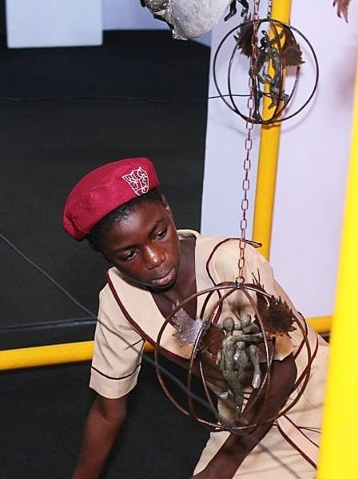

Technology
Exploring coding, data and digital tools — and learning how technology can solve problems that matter.
Explore technology →LAGOS, NIGERIA · YOUTH LEADER · TECHNOLOGIST · SPEAKER
I am a young Nigerian passionate about technology, education, leadership, public speaking and creating opportunities for girls and young people.
I want it to be about what I did with every opportunity I received.
From growing up in Makoko to discovering technology through education and STEM opportunities, my journey has been shaped by people who opened doors for me — and by the desire to keep opening doors for others.
More about me →Exploring coding, data and digital tools — and learning how technology can solve problems that matter.
Explore technology →Using my voice to share ideas, tell stories, facilitate conversations and encourage young people.
Explore speaking →Learning that leadership is less about a title and more about taking responsibility and creating room for others to grow.
Explore my journey →Creating spaces where girls can connect, learn, speak freely, build confidence and imagine more for themselves.
See my impact →
MAKOKO · LAGOS
Growing up in Makoko shaped the way I see education, opportunity and possibility.
I once wanted to become an architect because I was fascinated by the idea of taking something that existed in your imagination and turning it into something real.
Years later, technology gave that curiosity a different direction. I discovered coding, STEM and eventually data — and I began to understand that building could happen through technology too.
Read My StoryCOMMUNITY
A girl-led community creating a safe online space for girls to connect, learn, laugh, reflect and grow together.
Read more →GIRLS' HEALTH
A girls-focused initiative addressing menstrual health, menstrual hygiene and HPV vaccine awareness.
Read more →TECHNOLOGY
A student opportunity ecosystem currently in development, inspired by my own experience searching for opportunities.
Read more →LET'S HAVE A CONVERSATION
I speak about education, technology, girls' empowerment, leadership, opportunity and navigating life as a young person.
Explore My Speaking